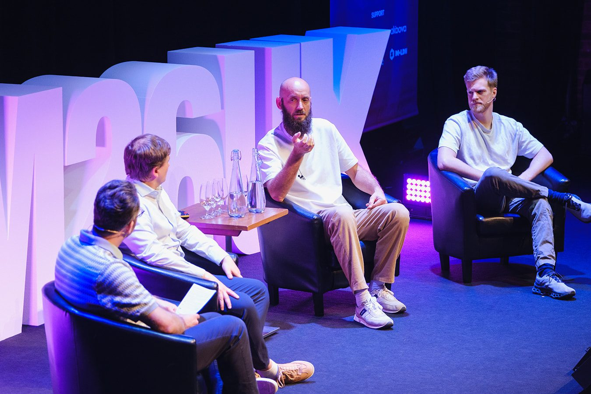
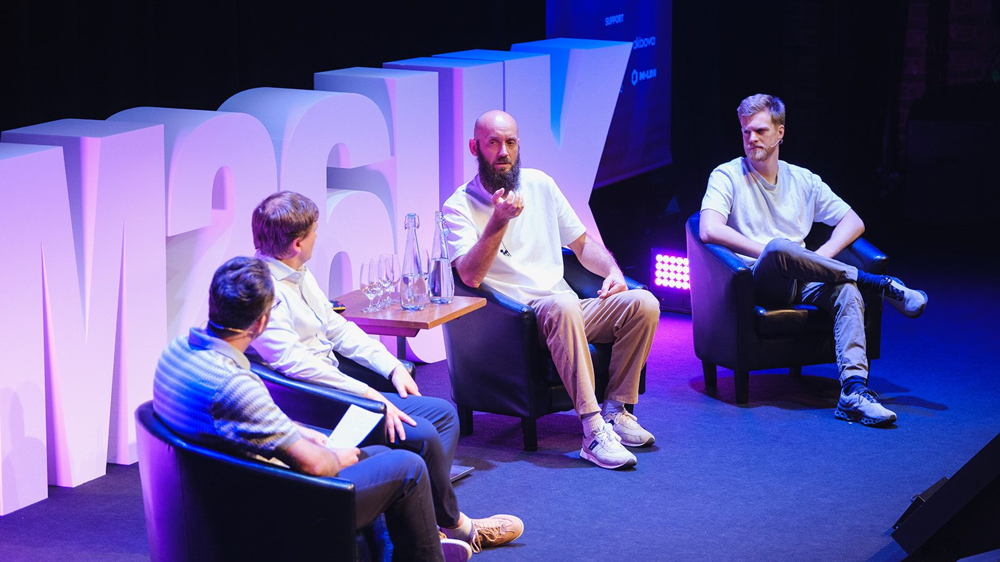

01 Framework
The Three Doors
Safety, then Context, then Decision. Skip one and the conversation breaks. If you're the one deciding, it doubles as a test: never say yes in a room where you couldn't say "I don't understand."
Design system
Cream ground, ink type, one yellow accent. Source Serif 4 at 600 for display, Schibsted Grotesk for everything else. A twelve-column grid with wide margins, 2 px corners, and a lot of air. Every value on this page comes from tokens.css, and every component from the site's own stylesheets.
01 Home page hero
The Trust Sequence. A book in development.
For the founder asking for budget, the project manager who needs a sign-off, and the owner deciding which supplier to trust.

02 Palette
03 Type
labelA book in development
smallNo spam. No funnels. Unsubscribe any time.
bodyThink about the last time you had to decide on something that mattered, offered by someone who knew more about it than you did. A builder, an agency, a software partner. You weren't short of information. You were short of a reason to believe it.
leadEvery decision has moments where it moves forward or quietly dies.
h3Ready for the next big yes
h2Most decisions don't stall on price. They stall on trust.
h1Walk out with a yes you can walk back in on.
displayThe Trust Sequence
Serif weight
DM Serif Display 400. The site before. Only one weight exists.
The Trust Sequence
Source Serif 4 Display 400. The family DM Serif was drawn from.
The Trust Sequence
Source Serif 4 Display 600. One step heavier. The system uses this.
The Trust Sequence
04 Grid
05 Spacing
06 Components
Buttons and links
Signup form and its states
Default
No spam. No funnels. Unsubscribe any time. How your email is handled.
Error
Success
Check your inbox. The first email is on its way, and the chapters follow as they're written.
Framework cards
01 Framework
Safety, then Context, then Decision. Skip one and the conversation breaks. If you're the one deciding, it doubles as a test: never say yes in a room where you couldn't say "I don't understand."
07 Framework
A seller you can trust tells you what you don't need and names the risk before you think of it. A buyer who knows this asks what the other side gains. Either way, the cards go face up.
11 Framework
If you have to push for the signature, the moment has already passed. A good yes is built from small agreements along the way, and a good buyer notices when they're being hurried.
Quote
"Nobody wants to take responsibility for the unknown."
Proof numbers
Rules
Footer
07 Photographs

08 Wordmark
Clear space on every side equals the height of the capital T. Never smaller than 20 px tall on screen or 6 mm in print. Ink on paper; paper on ink in print only. Never on the photograph, never in the accent.
09 Forbidden